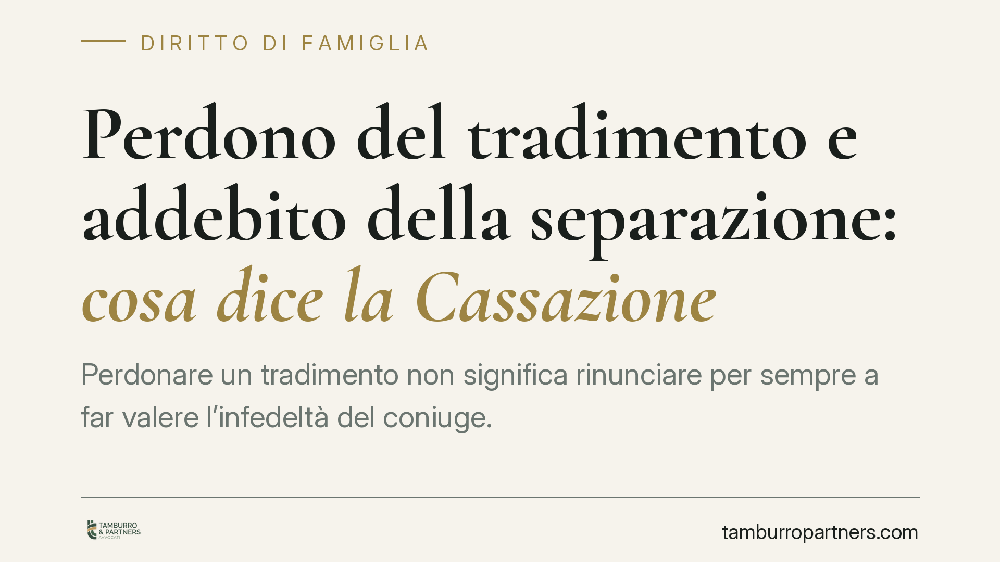

Perdono del tradimento e addebito della separazione: cosa dice la Cassazione
Perdonare un tradimento non significa rinunciare per sempre a far valere l'infedeltà del coniuge. La Cassazione precisa che il perdono di un episodio passato non copre nuove violazioni: ogni tradimento va valutato nel contesto della crisi coniugale. Resta però centrale la prova che quella condotta abbia causato la rottura del matrimonio.

Il caso e il principio
Un coniuge tradito decide di perdonare. La convivenza prosegue. Anni dopo emerge una nuova infedeltà. Il coniuge fedele può chiedere l'addebito della separazione, oppure quel perdono iniziale gli preclude ogni contestazione futura?
La Cassazione risponde in modo netto: il perdono di un tradimento passato non cancella il diritto di far valere infedeltà successive. La cosiddetta *riconciliazione* — la ripresa della vita coniugale dopo una crisi — sana il singolo episodio perdonato, ma non trasforma il matrimonio in un rapporto dove l'obbligo di fedeltà smette di valere.
Ogni tradimento va quindi valutato autonomamente, alla luce del contesto in cui si colloca.
Inquadramento normativo
Il riferimento è duplice. L'art. 143 del codice civile individua i doveri reciproci dei coniugi, tra cui l'obbligo di fedeltà. La sua violazione è, in linea di principio, causa di responsabilità nella crisi coniugale.
L'art. 151 del codice civile, al secondo comma, consente al giudice di dichiarare a quale coniuge sia *addebitabile* la separazione. L'addebito è la formalizzazione della responsabilità: il giudice accerta che il comportamento contrario ai doveri matrimoniali ha determinato l'intollerabilità della convivenza.
Qui sta il punto tecnico. Non basta provare il tradimento. Occorre dimostrare il nesso di causalità: che proprio quella condotta abbia causato la rottura, e non che sia intervenuta quando il matrimonio era già entrato in crisi per altre ragioni. Un tradimento successivo alla fine di fatto dell'unione, di regola, non fonda l'addebito.
Cosa cambia in concreto
La pronuncia sposta l'attenzione dal fatto in sé alla sua collocazione temporale e causale.
Perdonare un tradimento non è una rinuncia definitiva. Chi decide di ricostruire il rapporto non perde per sempre la possibilità di contestare comportamenti futuri. Il perdono estingue il singolo episodio, non l'intero patrimonio di diritti derivanti dal matrimonio.
Allo stesso tempo, la decisione ridimensiona un'idea diffusa: che scoprire un tradimento garantisca automaticamente l'addebito. Non è così. Se al momento dell'infedeltà la convivenza era già logorata, magari da distacchi affettivi, separazioni di fatto o conflitti pregressi, il nesso causale può mancare. In quel caso l'addebito non viene concesso.
Da qui deriva l'importanza della ricostruzione dei fatti: quando è iniziata la crisi, quando si è verificata l'infedeltà, quale sia stata la reale sequenza degli eventi.
Va ricordato, infine, che l'addebito produce effetti concreti. Il coniuge cui la separazione è addebitata perde, in linea generale, il diritto all'assegno di mantenimento e i diritti successori nei confronti dell'altro. Non si tratta quindi di una mera dichiarazione simbolica.
Il ruolo della prova
Il vero terreno del giudizio è probatorio. Chi chiede l'addebito deve fornire elementi che colleghino l'infedeltà alla crisi. Chi si difende può, al contrario, dimostrare che il matrimonio era già compromesso.
Messaggi, testimonianze, documenti, comportamenti pubblici: ogni elemento va raccolto in modo lecito e valutato nella sua rilevanza. Un errore frequente è concentrarsi solo sulla prova del tradimento, trascurando la ricostruzione del momento in cui l'unione ha smesso di funzionare.
Cosa fare in concreto
- Ricostruisci la cronologia: annota con precisione quando è emersa la crisi e quando si sono verificati i comportamenti rilevanti. La sequenza temporale è decisiva per il nesso causale.
- Conserva le prove in modo lecito: raccogli documentazione senza violare la riservatezza altrui. Prove ottenute illegittimamente possono essere inutilizzabili.
- Valuta l'effetto della riconciliazione: se dopo un perdono la convivenza è ripresa, considera che quell'episodio è sanato, ma le condotte successive restano contestabili.
- Non dare per scontato l'addebito: verifica se il tradimento ha realmente causato la rottura o se è intervenuto a matrimonio già finito.
- Consultati prima di agire: consigliamo di richiedere una valutazione preliminare del caso, per stimare la fondatezza di una domanda di addebito e i suoi effetti economici e successori.
Conclusione
Il perdono non è una firma in bianco. Chi sceglie di ricostruire il rapporto conserva la tutela per il futuro, ma ogni infedeltà va misurata nel suo contesto. L'addebito resta un accertamento rigoroso, dove la prova del nesso tra condotta e rottura è tutto.
Contributo informativo a cura di Tamburro & Partners - Avv. Giuseppe Tamburro. Non costituisce parere legale.
Ogni famiglia ha il suo equilibrio.
Separazione, divorzio, affidamento, assegno: se vuoi un confronto riservato su una specifica situazione, scrivi allo studio. Ti rispondiamo entro un giorno lavorativo.